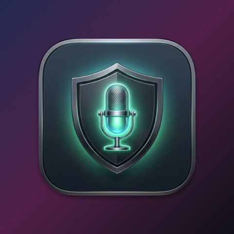
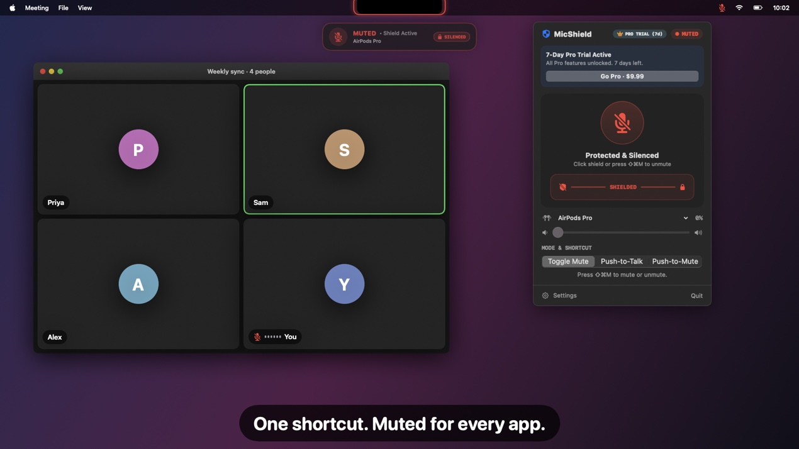
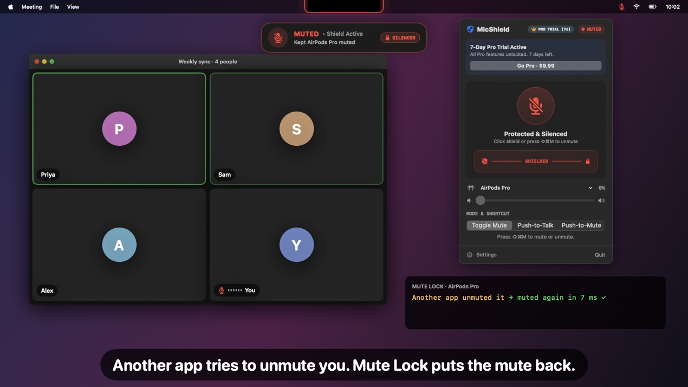
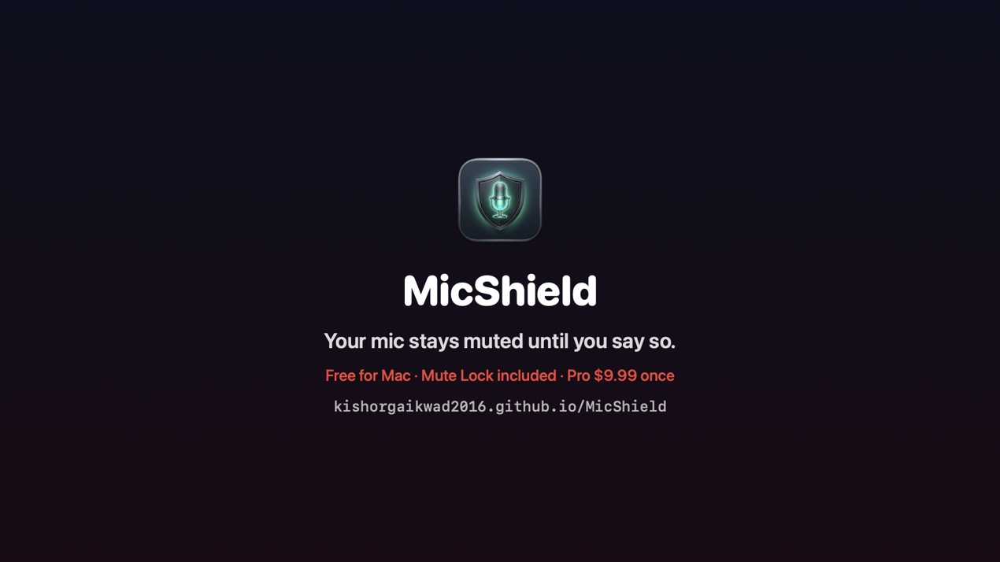
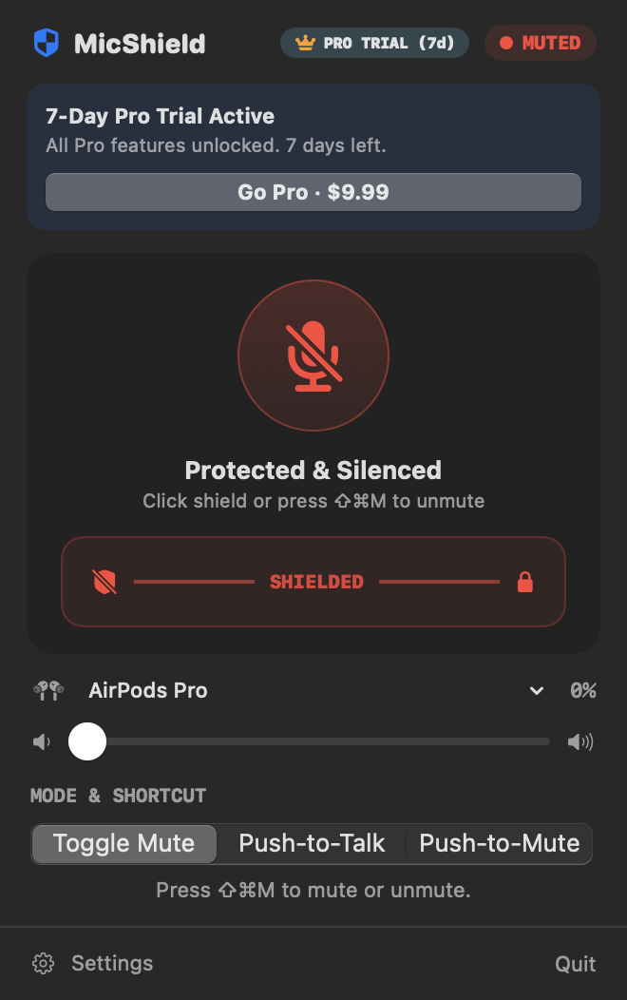
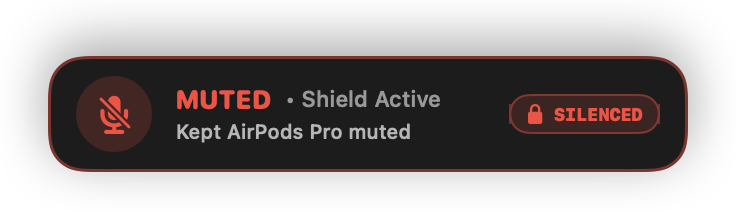

MicShield Press Kit
Everything you need to write about MicShield. All images and the video may be used in coverage of the app.
In one line
Short description (about 50 words)
Longer description
Every video-call app has its own mute button, and none of them stop the others from listening. MicShield mutes the microphone itself at the macOS audio level, so every app gets silence from one keyboard shortcut (⇧⌘M by default).
Mute Lock, free and on by default, watches for anything that unmutes the mic while you are muted, such as a meeting app's automatic volume or a headset button, and mutes it again, in under 10 ms in the developer's tests. If headphones disconnect, the mute follows you to the new mic.
MicShield Pro, a $9.99 one-time purchase with a 7-day free trial, turns the MacBook camera notch into a red/green status light, adds push-to-talk and push-to-mute, a floating indicator for Macs without a notch, and Safety Net guards that mute automatically when a call ends or you walk away.
Fact sheet
| Developer | Kishor Gaikwad (independent) |
| Platform | macOS 14 Sonoma or later, Apple silicon and Intel |
| Current version | 1.1.1 (November 2026) |
| Price | Free. Pro: $9.99 one-time, 7-day free trial, 14-day money-back guarantee |
| Free features | Global mute shortcut for every app, Mute Lock, mute all microphones, center alert, live input level, 6 languages |
| Pro features | MacBook notch alert, push-to-talk / push-to-mute, Safety Net auto-mute guards, floating indicator |
| Privacy | No recording, no audio leaves the Mac, no analytics. Notarized by Apple. |
| Download | kishorgaikwad2016.github.io/MicShield · brew install kishorgaikwad2016/tap/micshield |
| Contact | kishorgaikwad50@gmail.com (free Pro licenses available for reviewers) |
20-second demo
Download: 16:9 MP4 · 9:16 vertical MP4
Screenshots










